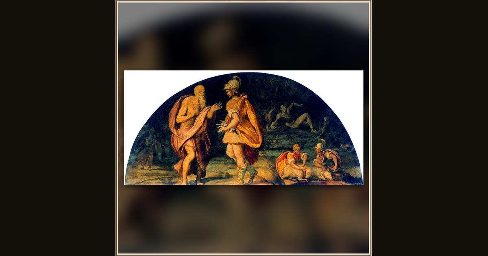

Odysseus Questions the Seer Tiresias
Alessandro Allori · 1580 · Palazzo Salviati · Florence, Italy
High on a palace wall in Florence, Odysseus leans in to hear the blind seer Tiresias tell him the way home. Explore its place in Book XI of the Odyssey.